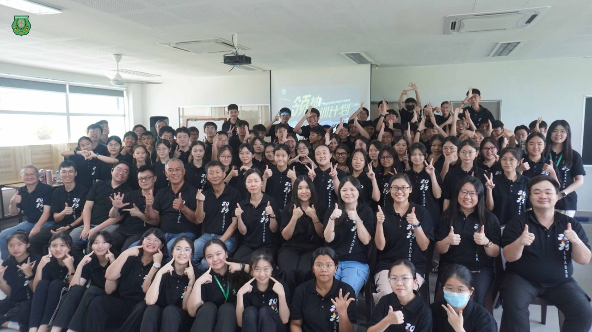
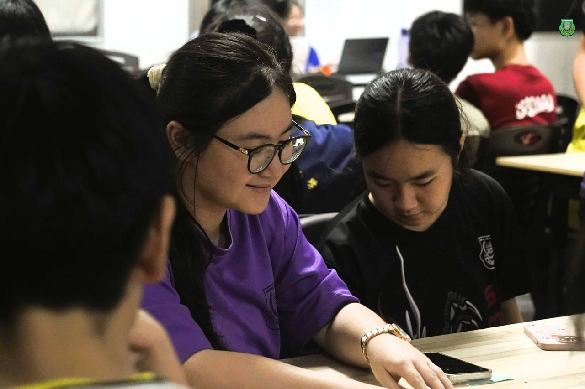
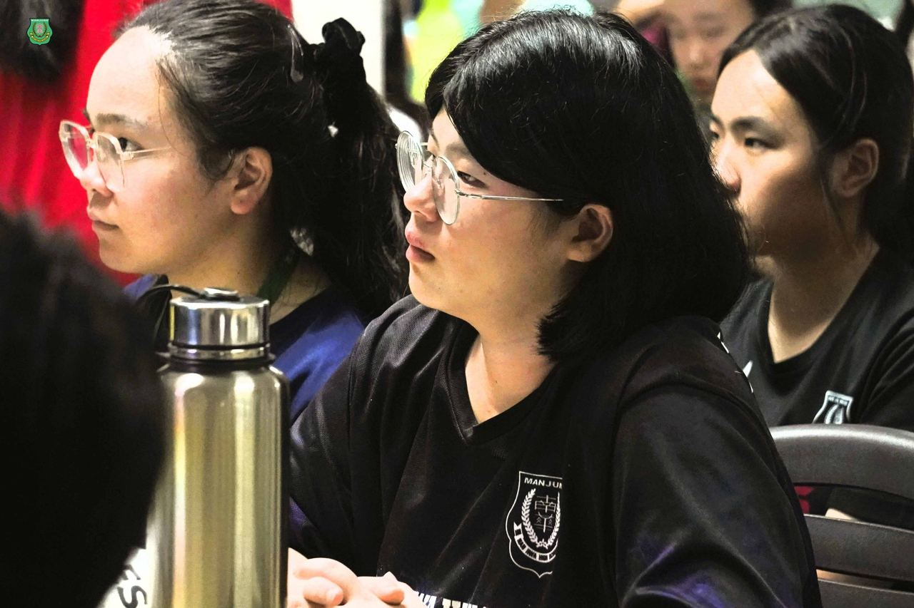
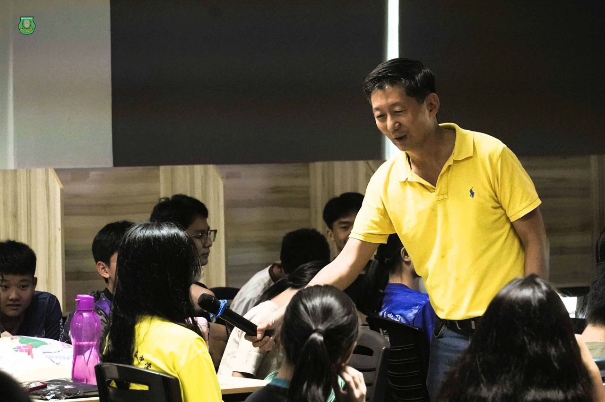
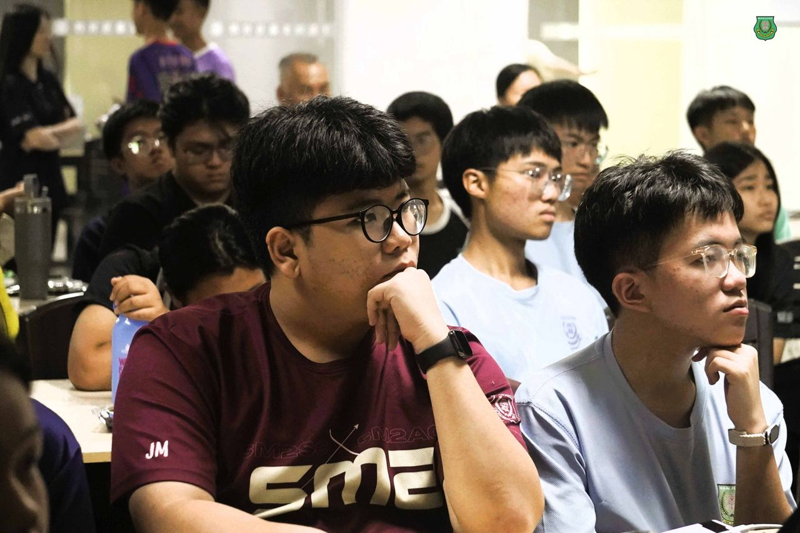
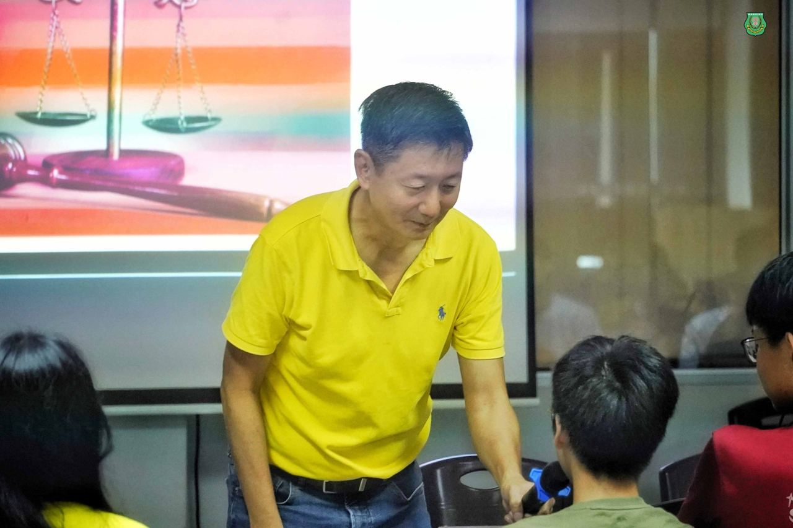
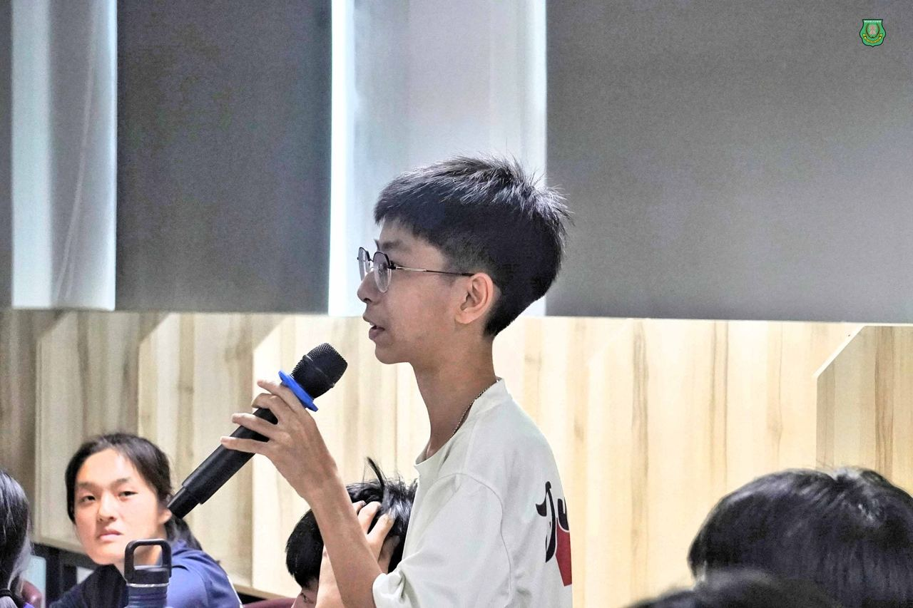
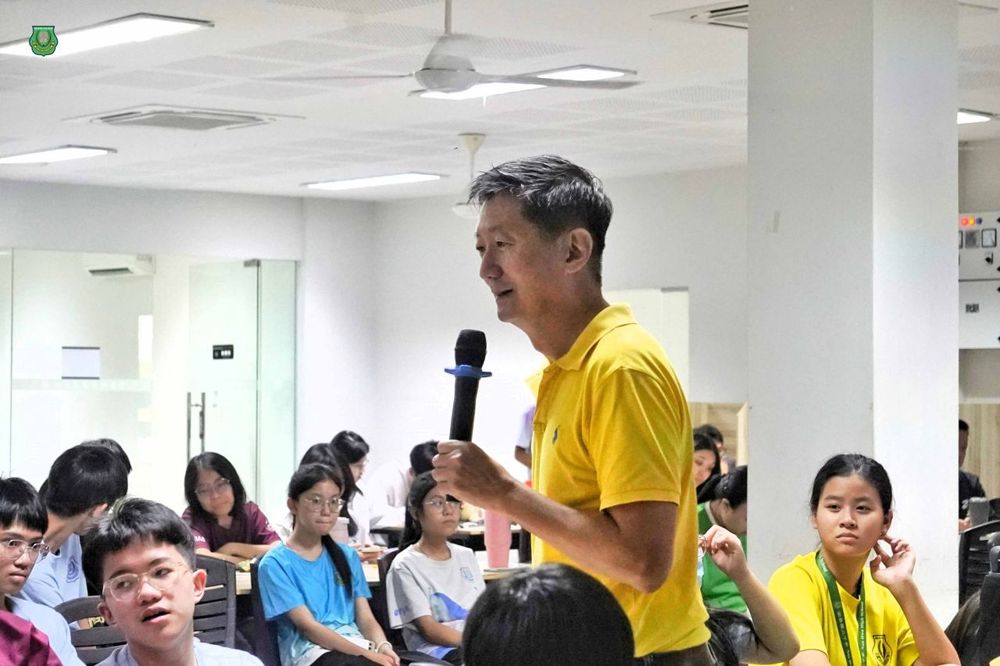

领袖素养：回馈社会与格局
领袖素养：回馈社会与格局
南华独中董事长颜登逸先生
唤醒学生领袖的时代使命
2025年南华独中学生领袖培训营于5月28日下午正式启动。首场讲座由董事长颜登逸先生亲自开讲，以《领袖素养：回馈社会与格局》为题，深刻阐发“21世纪领袖的责任观”，不仅奠定学生领袖培训计划整体精神方向，更让未来领袖们从“做事”思维跃升到“为谁做、为何做”的新高度，引导学生重新思考领袖格局。
#以格局为尺度，测量领袖高度与眼界
讲座中，颜董事长引用《道德经》的核心思想——“大道至简”，指出真正的格局，不是表面装饰，而是一个人看问题的高度与眼界。他指出：“领导靠职权，领袖靠格局。格局决定一个人用力的方向，也决定一个团体存在的意义。”颜董事长以“道、法、术、器”四层次，引导学生“不要只想活动流程，要想它能为谁解决什么问题。”
#从个人规划到公共使命：以格局增幅责任
颜董事长通过一系列实际案例分享，深入浅出呈现“格局”的三个核心功能：
以终为始：目标明确，减少资源浪费；
聚焦力量：选对方向，走得更远更持久；
得道多助：相信价值，就能借力成事
#学生领袖精神：公共精神与回馈社会
讲座的核心之一“公共精神”，即：“领袖不是为自己发光，而是让更多人因你照亮。”颜董事长引用“各美其美，美人之美，美美与共，天下大同”的理念，鼓励学生将个别学会计划上升为“社会责任”，并通过共情与配对机制，为社区带来实质转变。此讲座不仅是引发思辨、催化行动 ，更是鼓励未来学生领袖直面挑战。
颜登逸董事长以“共情、格局、责任”三轴交错，为学生领袖培训营立下关键反问，此刻学生的眼神中多了思索。
训练营才刚开始，但方向已经被点燃。







